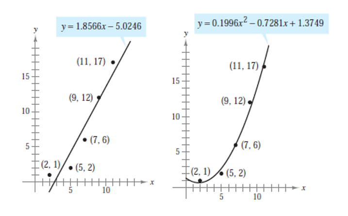
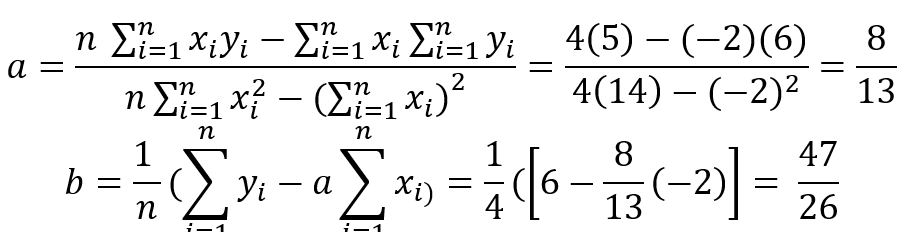
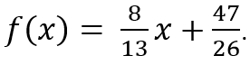
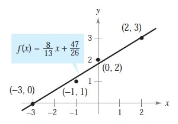

Es un método insesgado para la tendencia, es decir, su varianza respecto al valor real es mucho menor en comparación de otros métodos. Al construir un modelo para representar un fenómeno particular, los objetivos son simplicidad y precisión. Por ejemplo, observemos las siguientes gráficas.

Para el primer modelo, cuando se han graficado los puntos observamos que la función que es una recta no
pasa por todos ellos,
para la segunda gráfica que es una función cuadrática si se tocan todos los puntos.
Lo anterior explicado es que se pueden sumar los cuadrados de las diferencias entre los valores reales y
los valores dados
por el modelo para obtener la suma de los cuadrados de los errores o errores cuadráticos.
La diferencia de los cuadrados se puede graficar en forma de una recta y= ax+b creando una relación
entre ellos.
Esta recta en la recta de regresión lineal.
Para obtener los valores de a y b se usan las siguientes fórmulas:
Ejemplo:
Hallar la recta de regresión (ajuste de curva) para los puntos (-3,0), (-1,1), (0,2) y (2,3). Usando
n=4.
Tabulación:
Se tabulan los puntos como se muestra a continuación y se suman:
Punto (-3,0)x=3, y=0 xy= (3)*(0) x2=(3)2=9 De la misma manera para todos los puntos.
Se sustituyen los valores en las siguientes formulas para obtener a y b de la ecuación de la recta.
Quedando la recta de regresión como
Si graficamos los puntos y la recta en un mismo plano queda de la siguiente manera:

• Aplicación de la regresión lineal en un problema de pobreza, por la Universidad del Rosario,
Colombia. Ver aquí
• Aplicación del ajuste de curvas en el área de Machine Learning. Se considera un subcampo del área
llamado “Machine Learning Supervisado” Ver aquí
• Aplicación del ajuste de curvas en el área de tratamiento de aguas. Se usa este método para
estudiar
la aparición de ciertos componentes químicos durante diferentes etapas de distribución de agua potable
Hemos creado una plantilla en excel donde se pueden insertar hasta diez pares de coordenadas generando la ecuacion de la recta e su forma y=ax+b y las gráficas correspondientes.
Descarga aqui
EA, B. R. (2018). Estimating linear trends: Simple linear regression versus epoch differences.
Obtenido de J Clim.: http://0-search.proquest.com.millenium.itesm.mx/docview/1751976788?accountid=11643.
doi: http://0-dx.doi.org.millenium.itesm.mx/10.1175/JCLI-D-15-0032.1.
Larson, R., Hostetler, R., & Edwards, B. (2010). Cálculo esencial. CDMX: Cengage Learning.